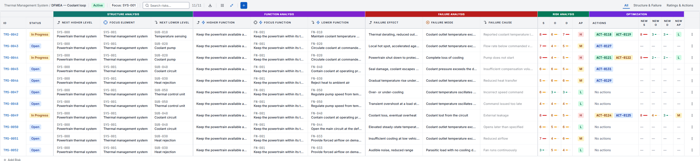
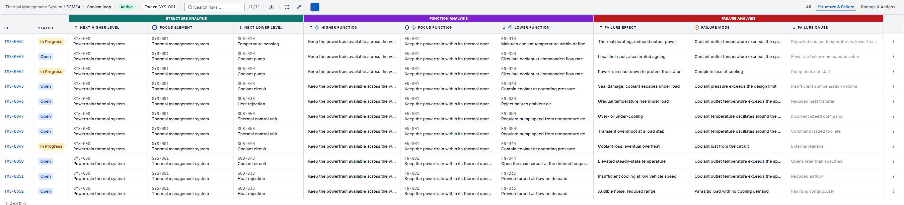
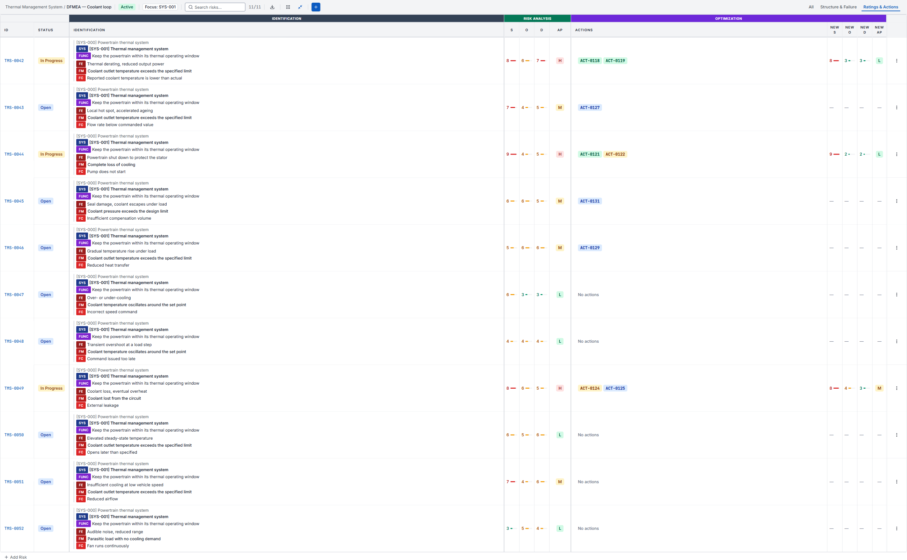
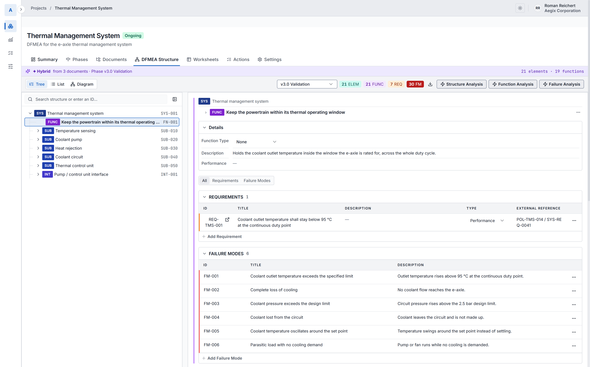
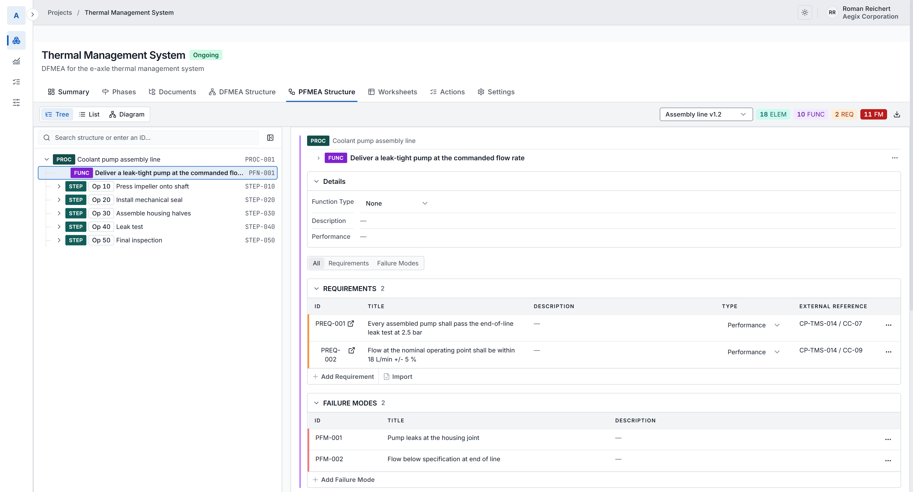
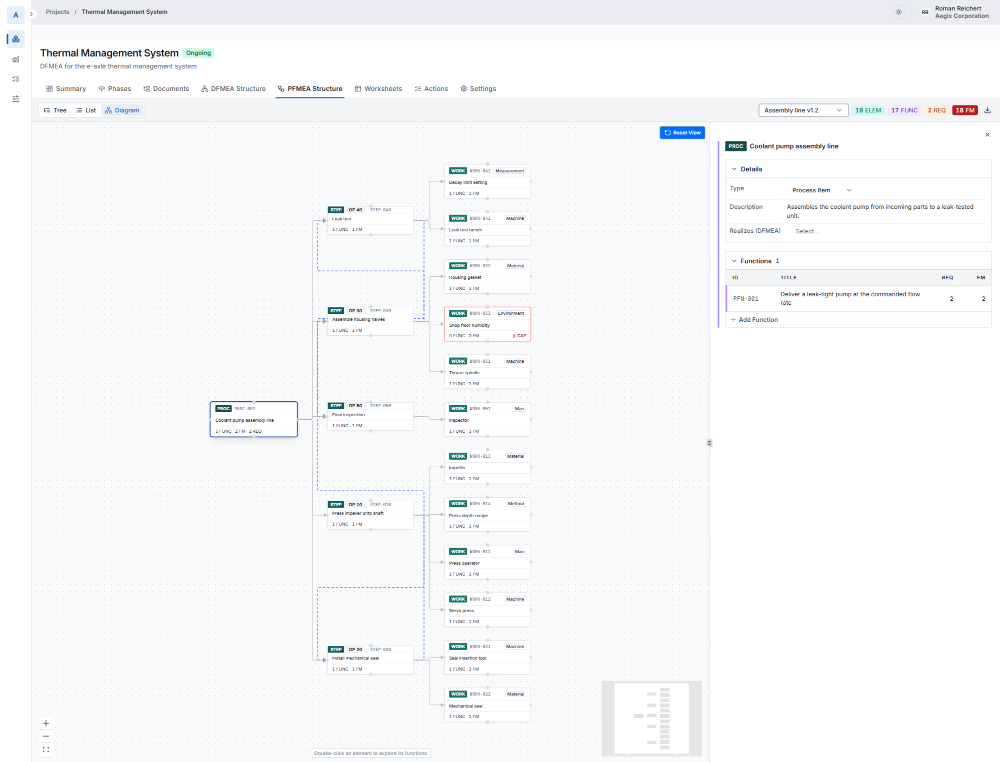
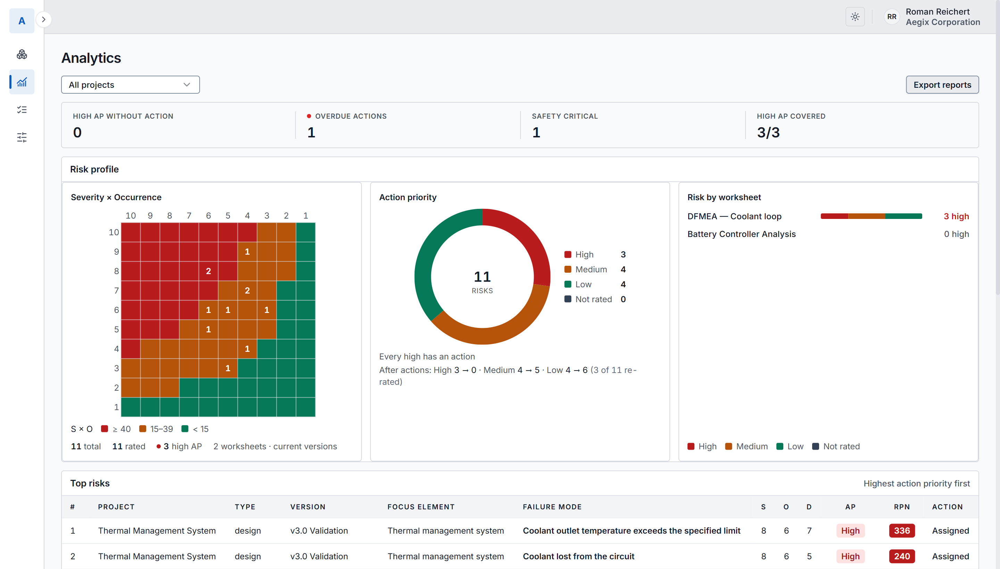
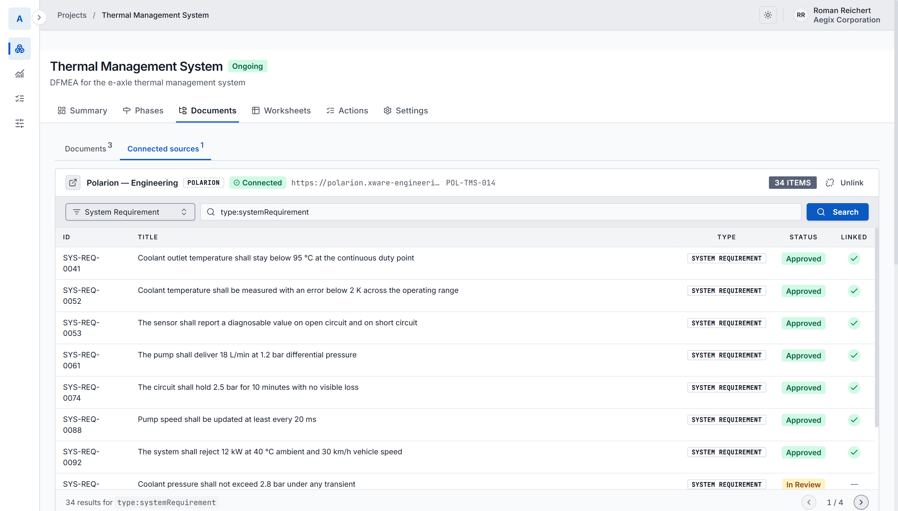

Engineering intelligence for FMEA
Aegix combines a central engineering model with AI agents that carry Design and Process FMEA from specification through to risk analysis and improvement actions. Your experts review and validate every step.
Less time building the FMEA. More time thinking about the risk.



Scroll sideways to see the whole worksheet.
The problem
The information needed for an FMEA already exists, spread across system specifications, requirements, architecture documents, design descriptions, previous FMEAs, test documentation and ALM systems. Engineers then spend hours finding it, interpreting it and transferring it into another structure.
Gathering information, building the analysis and keeping the FMEA maintained take significant engineering time.
Critical knowledge rests with experienced engineers whose time is limited.
Designs and processes keep changing, and the analysis has to follow them.
Different methods, terms and disconnected teams make analyses hard to compare.
Requirements, drawings and process information sit across documents and tools.
Previous FMEAs and lessons learned are hard to find and apply to the next project.
The analysis opens with its structure already drafted from your documents.
What Aegix does
An engineering model underneath the AI, and an engineer in charge of every step.
AI agents draft the structure, functions, failure modes and worksheet rows from your requirements, specifications and documents.
Every suggestion waits for an engineer to review, change or accept it. Nothing enters the analysis on its own.
Product structure, functions, requirements and failures live in one model, rather than in unstructured text.
Specifications, requirements, drawings, control plans and existing FMEAs all become inputs to the same analysis.
Every team follows the same steps on the same AIAG & VDA template, with Action Priority worked out the same way.
Aegix runs on Microsoft Azure in the EU, with each company’s data kept apart from every other company’s. It can also run in your company’s own Azure tenant, so your engineering data stays inside it.
How it works
Aegix combines AI with a structured engineering model.
Extract relevant engineering information from requirements, specifications, documents and existing analyses.
Turn unstructured information into engineering concepts and relationships: functions, failure modes, causes, effects, controls, actions.
Assist engineers in identifying potential failure modes, relationships and gaps in the analysis.
Connect risk analysis back to its engineering sources, and forward to mitigation, implementation and verification.

The system, its subsystems, and the requirement and failure modes on the selected function. More on Design FMEA

The same screen for a Process FMEA: process item, process steps by operation number, and the control plan characteristics the line has to hold. More on Process FMEA

The same process structure drawn as a diagram. Each step fans out to its work elements, tagged man, machine, material, method, environment or measurement. The one outlined in red has no function and no failure mode against it yet.
Human in the loop
AI finds the relevant information, proposes relationships and suggests failure modes. The engineer stays in charge of every step.
Nothing enters the analysis until an engineer accepts it.
Traceability
An FMEA is a chain of engineering reasoning. Aegix keeps the links between its steps, so a failure mode still points back at the requirement it threatens and forward to the verification that covers it.
The FMEA becomes part of the engineering lifecycle.
Analytics
See Action Priority, High AP coverage, overdue actions and the risk profile per worksheet, per project or across the programme, with the analysis one click away from every number.
High-priority risks that still have no action stand out. Every action has an owner, a priority, a due date and a status, and stays linked to the risk it answers.

Action priority across every worksheet, with high-AP coverage and overdue actions.
Integrations
Aegix connects to the tools your engineering already runs on. It reads requirements from your ALM, such as Codebeamer or Polarion, and keeps each one linked to its source. FMEA actions go to your task tool, such as Jira, and their status comes back. Everything else arrives as files: specifications, existing FMEAs, drawings and control plans in; Excel worksheets, PDF reports and action lists out.
Requirements arrive carrying their ALM id, and keep it.

Browsing the linked Polarion project. A tick marks the requirements already pulled into the analysis.
Method
Aegix covers Design FMEA (DFMEA) and Process FMEA (PFMEA), the two forms of failure mode and effects analysis, on the AIAG & VDA method, which it ships with as a ready starting point. Your engineering team still controls functions, failure modes, effects, causes, controls, risk evaluation, actions, responsibilities, reviews and approval.
Templates are configurable, so a team that uses different terminology, different rating scales or a different worksheet layout can set that up once and work the way it already works.
Knowledge reuse
An FMEA holds engineering knowledge that took experienced engineers time to create, and it usually stays trapped in previous projects, spreadsheets, documents and individual teams.
Your previous engineering work becomes an asset for the next project.
The difference
| Traditional FMEA | With Aegix |
|---|---|
| Search through documents | Extract relevant engineering information |
| Start from a blank table | Start from existing engineering knowledge |
| Manually transfer information | AI-assisted structuring |
| Discover gaps during reviews | Surface potential gaps earlier |
| FMEA isolated from engineering | Connected to requirements and ALM |
| Knowledge stays in projects | Knowledge becomes reusable |
The time it gives back goes into thinking about the risk.
Who it's for
For organisations developing complex and safety-critical products.
Functional safety, electrification, software-intensive systems and complex E/E architectures.
System complexity, safety requirements and long engineering lifecycles.
High-consequence systems where traceability and engineering judgement matter.
Structured risk analysis connected to product and verification information.
Complex products where engineering knowledge spans multiple disciplines and tools.
Where it fits
Aegix works inside the disciplines your FMEA already depends on.
Connect FMEA with the broader safety engineering process.
Work with functions, architectures, interfaces and dependencies.
Maintain relationships between requirements and risk analysis.
Connect mitigations and controls with verification evidence.
Bring FMEA closer to the systems where development happens.
FMEA is where Aegix starts. The goal is an engineering model that follows every change across the product lifecycle and shows its effect on risk as it happens.
From analysing risk periodically, to continuously understanding how engineering changes affect risk.
Who builds it
Aegix is developed by XWARE, an engineering company focused on complex software and cyber-physical systems. Our work spans functional safety, cybersecurity, systems engineering, requirements and ALM, verification and validation, and AI-assisted engineering.
Aegix comes out of the engineering work XWARE already does.
Ask a question, arrange a demo, or tell us what you would want to try Aegix on. A demo is a guided walkthrough with our engineers, on a sample project.
Aegix is a product of XWARE, developed with a grant from Innoviris. XWARE is a partner of hub.brussels.